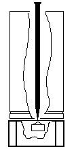
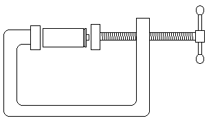
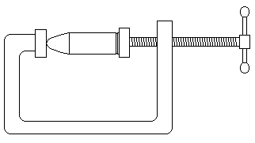
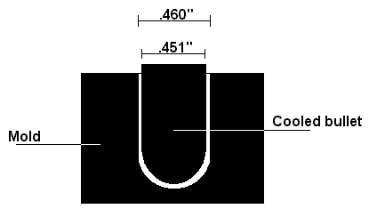

The Improv
by
Tom Spooner
|
This month's oddball tip: Drying Food - So you want to try your hand at drying food (jerky or dried fruits, perhaps), but you don't have one of those fancy store-bought food dryers. Use your regular oven; it isn't the most energy-efficient technique, but it works. Line the bottom of the with aluminum foil. Spread cut-to-fit sections of aluminum screening over the oven racks. You're set. I typically use a temperature range of 120°-180°F to dry everything. I process meats at 180° for an hour or two, then drop the temperature down to the low end to finish up. If serious food preservation is your goal, dry everything rock-hard; get all the moisture possible out of the food. But if you're more interested in tasty snacks like jerky or fruit leathers to take on your upcoming backpacking trip, you'll want to keep it all chewy.
 Buy my book! Improvised Reloading
Sir, If you have any information on improvised re-loading would you please do an article on it. I have in mind subjects such as steel case reuse, rebuilding primers (I understand that in the Soviet Union people used match heads) improvised propellant that does not require a degree in chemistry and a death wish, and also how to cast bullets out of low temperature metal, pot metal, wheel weights, etc, etc. if we are lucky this info will never be needed but, if it is anybody without it will be in a world of hurt. Thanks for reading this rambling. To start, you might want to take a look at Field's May article on the Lee Loader. I haven't used one, but it looks handy for worst case scenarios.
Primitive Reloading
Nut Finishing nail Hammer Micrometer Experienced reloaders are going to cringe at what follows, but we're talking emergency (only) conditions here. Start by getting the old primer out of your fired brass. Set the case on top of the nut, open end up. This gives the case support, but leaves empty space under the primer. Put the finishing nail into the case, down in the primer hole at the bottom. Tap the nail down with the hammer until the primer pops out. Give the primer socket a bit of a cleaning with a toothbrush.  Next, set a new primer into the socket. Put the case and primer into the C-clamp, and use the clamp to press the primer all the way down.
 Take the case out of the clamp and measure the appropriate amount of gunpowder into it. Set your new bullet into the case mouth, and place the assembly back in the C-clamp again. Press the bullet down until it's seated correctly. Check the cartridge height with the micrometer to be sure.
 Of course, you have to know the 'appropriate' and 'correct' measurements to start with. You'll need reloading tables for each cartridge you work with. But then, you'll need those whether you're improvising or using a fancy turret press. Or you could start by reverse-engineering a loaded round. Use your micrometer to get all the cartridge dimensions on an un-fired round. Then pull the bullet (a conventional bullet puller is best, but pliers will work if you don't mind ruining the bullet), and pour out the powder. Weigh the powder. Or you can make a scoop that holds exactly what you need. I've tried this system with .45ACP, but never a rifle cartridge. You'll notice that I didn't mention re-sizing the case at all. I got away without it. You may not. If you use your reloads in the same gun every time, full case resizing may not be required. If you fire the stuff in different guns, expect to resize, and plan accordingly. You may be able to neck size cases by tapping the case mouth down into a tapered hole in a metal plate; check the dimensions with a micrometer after each tap. Warning for the safety-impaired: Resize before you install the new primer.
Steel Cases
Primers Fortunately, there are other things that do go bang when struck. Cap pistol ammunition, for instance. Dissect a few caps for the powder in them and pack that into your old primers. Then there are the little pyrotechnics called - among other things - Snap 'n Pops. These are the little twists of paper that pop when you throw them down on a sidewalk (or scatter on a sidewalk for the unsuspecting to step on). Untwist the paper, discard the sand, and save the percussive material for your primers. There are also actual black powder percussion caps. If you must produce your own percussive powder, I found an old chemical handbook reference to a compound of nitrocellulose and potassium chlorate, proportions unknown but I'd start experimenting at 3:1. You'll find other percussive mixes in my notebook excerpts article, from last October.
Propellants I recommend against the use of black or white powders in gas-operated autoloaders; you'll foul your action quickly. Blow-back actions won't like it much more, but at least they're easier to clean.
Bullets Wheel weights are a favored lead source for cast bullets. I know people who make a game of looking for weights during family walks. I think your best bet for bullet molds is to buy them. You could make a mold from an existing bullet, but since lead expands when it's melted, when it cools in such a mold, it'll shrink down to a sub-caliber bullet that's too small. You can experiment with enlarging your mold slightly until the cooled bullet from such shrinks to the correct caliber as measured with that handy micrometer. Melting the lead is simple enough. Put pieces in a steel can or pan and heat it with a propane torch (or over a fire). Skim off the dross floating on top with a steel spoon. Pour the melted lead into your mold. Lead melts at 621.5°F (327.5°C).
 Note that while my example shows the actual dimension of a .45ACP bullet, the mold dimension is not necessarily the actual size. If you happen to have a lathe, try casting a bar of lead, then machining that down to bullets.
|